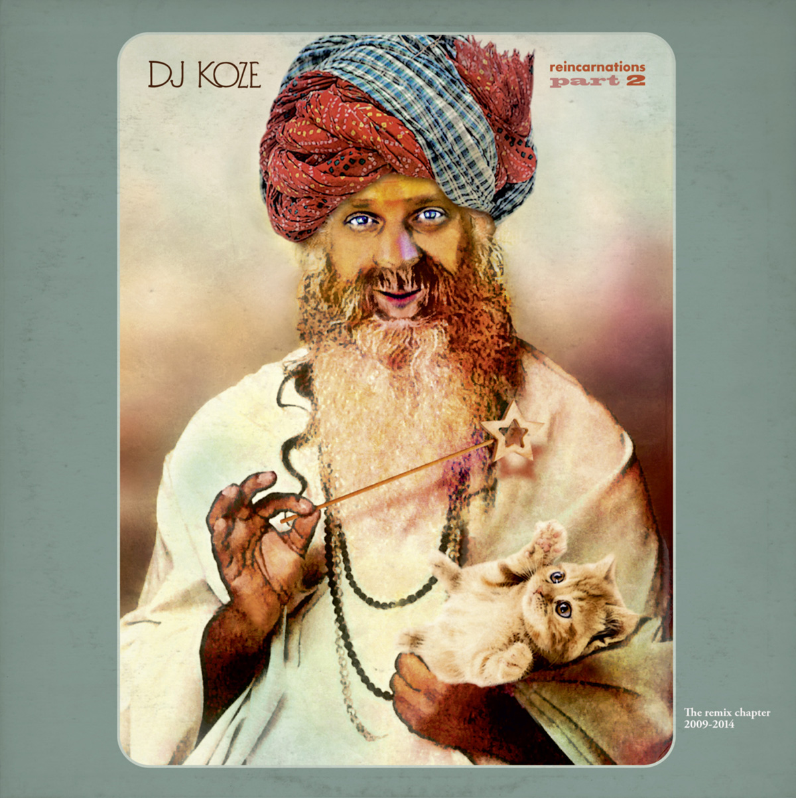

DJ koze – reincarnations Part 2
Geplaatst door: Tyrion Lannister op Augustus 10, 2014
Genre: dance
Het gebeurt zelden dat je een danceplaat, laat staan een remixalbum, blind kan kopen simpelweg door de namen op de hoes. DJ Koze is echter niet je gemiddelde dance-artiest. De Duitse Stefan Kozalla is een veelzijdig producer en verdiende zijn sporen als remixer vijf jaar geleden met het eerste deel van Reincarnations. Op deel twee neemt hij onder meer Caribou, Gonzales en Apparat succesvol onder handen, maar het zijn met name zijn versies van It’s Only van Herbert en Bad Kingdom van Moderat die je rustig als moderne klassiekers mag bestempelen.
DJ Koze is echter niet je gemiddelde dance-artiest.
- 01. Intro
- 02. Super Flu - Jo Gurt (DJ Koze Remix)
- 03. Moderat - Bad Kingdom (DJ Koze Remix)
- 04. Herbert - It's only (DJ Koze Remix)
- 05. Herbert - You Saw It All (DJ Koze Remix)
- 06. WhoMadeWho - Keep Me in My Plane (DJ Koze's Hudson River Dub)
- 07. Caribou - Found Out (DJ Koze Remix)
- 08. Zwanie Jonson - Golden Song (DJ Koze Remix)
- 09. Gonzales - Knight Moves (DJ Koze Remix)
- 10. The Big Crunch Theorie - Distortion (DJ Koze Remix)
- 11. Ada - Faith (DJ Koze's Grungerwomen Remix)
- 12. Soap & Skin - Marche Funèbre (DJ Koze Remix)
- 13. Apparat - Black Water (DJ Koze Remix)